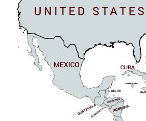

Descripcion:
También llamada tah o taj. Nombre en maya: taj, sak xo’ xiiw. Inglés: sunflower goldeneye, toothleaf goldeneye, plateau goldeneye. Planta silvestre herbácea, perenne, de hasta 2.5 metros de altura, cuyas numerosas inflorescencias aparecen en el extremo de largos y delgados tallos.Resistente a la sequía, útil como forrajera e indispensable para la producción de miel en la Península de Yucatán. Muy vistosa durante la floración como planta de ornato. Vale la pena concederle un lugar en el jardín.
Usos Medicinales:
Respecto al empleo medicinal del tajonal, existen estudios recientes sobre las propiedades antibacteriales del aceite esencial de las partes aéreas (hojas, tallos y flores); se sabe de su uso en medicina tradicional de algunas regiones del país para combatir la tos y algunas afecciones de la piel.
Contra-indicaciones:
Actualmente no se sabe con mucha certeza si existen complicaciones durante su uso , pero se dice que puede ocasionar mareos y alergias a ciertas personas.
